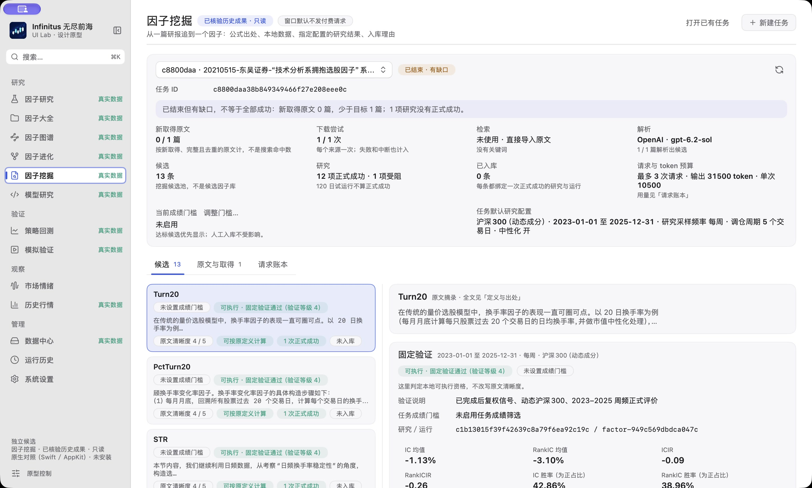
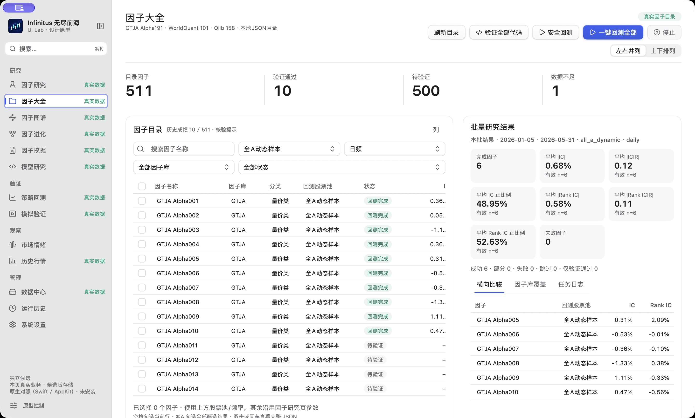
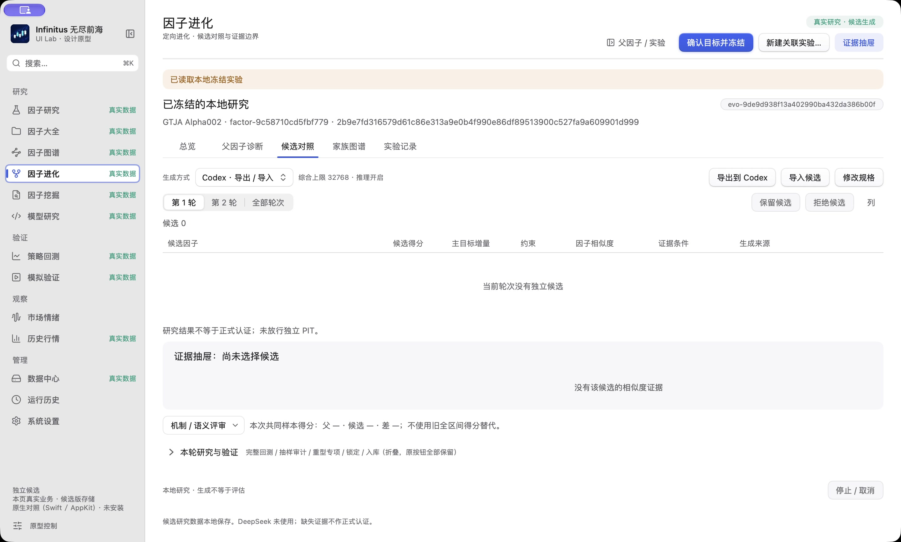

01 / 13专题实录
因子图谱
查一查哪些因子表现相似，再看组合的八轴雷达。点选一根轴，就能看到哪些因子贡献最多。
无尽前海 / A 股研究工作台
我想把读到的指标、当时的行情和后来那笔没买到的单子放在一个窗口里。这样看回测，至少不用开五张表互相找日期。
为什么叫「无尽前海」？拉丁语 infinitus 意为「无尽」。我现在在深圳，前海是深圳的一个核心区域，就借了它的名字。「无尽」说的是总有问题值得继续研究，「前海」记的是我做这个工作台的地方。
01 / 整个工作台
前半程浅色，后半程深色。这里只看它怎么用，不用盯着进度条等结果。
市场情绪 → 历史行情 → 因子研究 → 因子大全 → 因子图谱 → 因子进化 → 因子挖掘 → 模型研究 → 策略回测 → 模拟验证 → 数据中心 → 运行历史 → 系统设置
02 / 最近更新
03 / 分模块看
查一查哪些因子表现相似，再看组合的八轴雷达。点选一根轴，就能看到哪些因子贡献最多。
从研报里找因子，点开就能对照原文。看过回测成绩，再按自己设的门槛决定收不收进因子库。

挑一个因子做回测，看它能不能把股票排出强弱，再对照各组后来的收益。

按股票池和频率查已有成绩，也能选一批因子一起跑。没有测过的就留空。

把原因子和改过的候选放回同一段行情，看改动有没有帮上忙。

用同一批因子试不同模型，再拿训练时没见过的行情比较预测表现。
沿着净值曲线找拐点，回看当天的委托和成交，弄清哪笔交易影响了结果。

看策略在模拟账户里怎么走。明日预单、实际成交和持仓分开记录。
把几条市场强弱曲线放在一起，换个时间段，看它们从哪天开始分岔。
拖动日线图，查看某一天的价格、均线和成交量，也能核对行情更新到了哪天。
研究前先查有哪些数据、各自覆盖哪段日期，免得拿不同区间的结果硬比。

找回以前跑过的研究，查当时的设置、完成状态和已保存的结果。

切换深浅色和动效，调整日常使用偏好与默认交易费用。